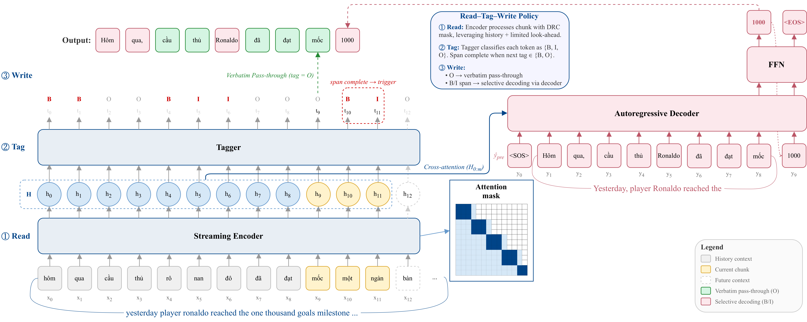
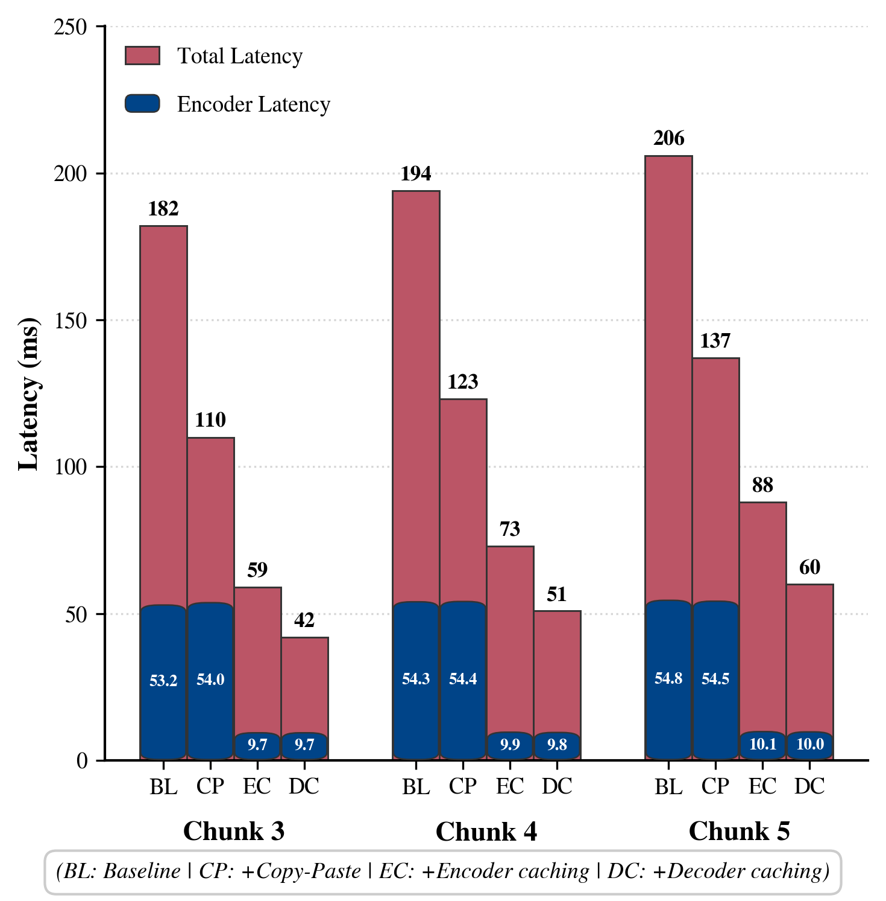
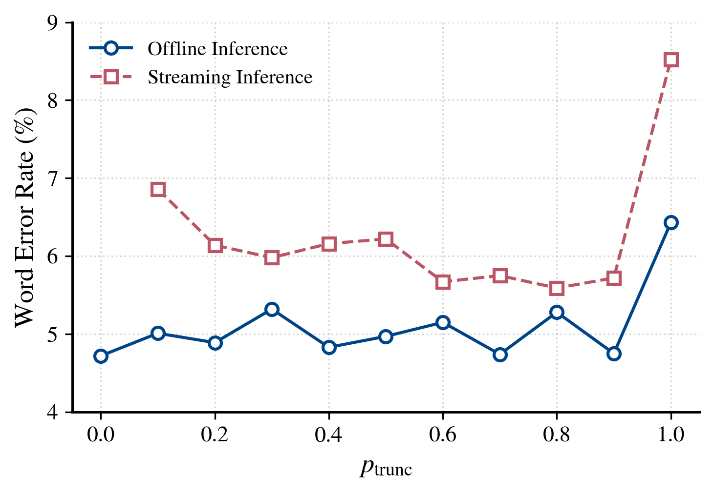

Watch the Read–Tag–Write policy stream spoken-form ASR tokens into formatted written text. Pick an example and chunk size, then run it. Outputs are precomputed for illustration.
Streaming Inverse Text Normalization (ITN) is vital for converting spoken-form outputs from streaming Automatic Speech Recognition into formatted written text. Existing streaming ITN methods rely on hybrid systems combining neural tagging with expert-crafted finite-state transducer rules, limiting scalability across domains and languages. While end-to-end models offer superior scalability by learning directly from data, standard encoder–decoder architectures are inherently non-streaming due to global attention. In this paper, we propose an efficient streaming end-to-end ITN system, adapting a pretrained text-to-text model to leverage its robust linguistic knowledge. To enable streaming, we introduce architectural adaptations, a specialized training strategy, a Read–Tag–Write decoding policy, and inference optimizations. Experiments on Vietnamese datasets show accuracy comparable to non-streaming baselines, outperforming hybrid methods while satisfying real-time latency requirements.

Overview of the proposed streaming end-to-end ITN framework using the Read–Tag–Write policy. The streaming encoder uses Dynamic Right Context masking to process incoming chunks of spoken-form tokens, while a joint tagger predicts $\{$B, I, O$\}$ labels. Verbatim tokens (O) are passed through instantly to minimize latency. Upon completing a normalization span, the autoregressive decoder is selectively triggered, generating normalized text by cross-attending to the relevant encoder hidden states $H_{0:m}$ and conditioning on the written-form prefix $\hat{y}_{pre}$.
A practical recipe of architectural changes, a streaming-aware multi-task objective, and a novel data augmentation that together enable end-to-end ITN with strict left-to-right processing.
An efficient simultaneous decoding policy that passes through non-normalized tokens with minimal delay and triggers generation only on completed spans, accelerated by KV caching and a Copy–Paste strategy.
Rigorous evaluation on a newly curated 5M-sentence Vietnamese dataset with automated alignments and boundary tags, verifying highly efficient real-time performance.
Standard seq2seq encoders use global attention and cannot run incrementally. We make the encoder streamable with Dynamic Right Context (DRC) masking during training: an attention mask that simulates variable chunk sizes and a dynamic look-ahead while always preserving the full historical left context. Varying these parameters during training makes the model robust to diverse latency constraints at inference.
For an input sequence $X = \{x_0, \dots, x_{n-1}\}$ the encoder produces hidden states $H \in \mathbb{R}^{n \times d}$ under the DRC mask. A lightweight linear Tagger sits atop $H$ and labels each token with a $\{\text{B}, \text{I}, \text{O}\}$ (Beginning, Inside, Outside) scheme for on-the-fly span detection:
Unlike hybrid systems that need fine-grained category tags to trigger FST rules, our tagger uses only 3 classes, simplifying classification and yielding more robust span detection. These tags are the control signals for the RTW policy below.
The decoder keeps its standard autoregressive structure, generating written-form tokens $y_t$ by cross-attending to $H$ and conditioning on previous tokens $y_{\lt t}$:
The model is trained with a multi-task objective combining a span-detection loss and a sequence-generation loss:
Unlike Simultaneous Machine Translation policies that manage global structural reordering, RTW exploits the local, order-preserving nature of ITN to coordinate the streaming encoder and autoregressive decoder, ensuring generative normalization occurs only when necessary. It operates in three phases:
Incoming ASR tokens arrive in chunks $C_k = \{x_i, \dots, x_{i+c-1}\}$ of size $c$. The DRC-constrained encoder processes $C_k$ using cached history and a look-ahead of $r$ tokens, appending $H_{i:i+c-1}$ to the global state $H_{0:i+c-1}$.
The joint tagger classifies each new token as $\hat{t}_j \in \{B, I, O\}$. A span completes only when the next tag is $B$ or $O$ (or a sentence boundary); an $I$ keeps the system reading without triggering a write.
Verbatim pass-through emits $O$ tokens directly with minimal latency. Selective decoding fires on completed $B$–$I$ spans, cross-attending only to $H_{0:m}$ so look-ahead never leaks into the transformation.
Letting $m$ be the index of the last token of the completed span, the decoder produces the local written-form segment $\hat{y}_{\text{local}}$ conditioned on the prefix $\hat{y}_{\text{pre}}$ and restricted cross-attention to $H_{0:m}$:
Restricting cross-attention to $H_{0:m}$ prevents the decoder from over-generating beyond the target span. Decoding stops at
<EOS>, with a hard cap of $L_{\text{max\_local}}$ tokens per span to avoid runaway loops.
An incremental key–value cache reuses encoder computation across chunks; a single batched decoder pass re-populates self- and cross-attention caches before autoregressive generation resumes.
Since the $O$ tag dominates, verbatim tokens bypass the decoder but are still kept in the historical context, cutting compute and curbing hallucinations while preserving full context for $B$–$I$ spans.
A "fully streaming" variant caches decoder self- and cross-attention, updating states only for new tokens. It removes init passes at the cost of a small, empirically negligible train–inference mismatch.
RTW needs the decoder to emit a <EOS> to end each local span, but standard training only conditions
<EOS> on a global source boundary: a train–test mismatch. We bridge it by stochastically
truncating aligned training pairs on-the-fly with probability $p_{\text{trunc}}$: the source-side <EOS> is
omitted while the target prefix is terminated with <EOS>. This teaches the model that any valid span completion,
even mid-sentence, must trigger termination from partial encoder states alone.
Require: training pair (x0:N-1, y0:M-1), probability ptrunc
r ~ Uniform(0, 1)
if r < ptrunc # truncated case
k ~ Uniform{1, …, N-1}
x' ← x0:k-1 # no source-side <EOS>
y' ← [ y0:l-1 ; <EOS> ] # target aligned with x0:k-1
else # full-sequence case
x' ← [ x0:N-1 ; <EOS> ]
y' ← [ y0:M-1 ; <EOS> ]
return (x', y')$S_2$ achieves WERs of 4.18% / 0.64%, surpassing the hybrid baseline $H_2$ by $1.98\times$ / $6.56\times$ and Wait-$k$ by $1.67\times$ / $5.81\times$, while approaching the non-streaming $B_2$ baseline and reaching a 97.19% tagging F$_1$ for reliable boundary detection.
| Model | Pretrained | F$_1$ | WERw/ PnC | WERw/o PnC | |
|---|---|---|---|---|---|
| Non-stream | $B_0$ (scratch) | × | – | 4.61 | 1.11 |
| $B_1$ | EnViT5 | – | 3.84 | 0.74 | |
| $B_2$ (+tagging) | EnViT5 | 97.34 | 3.63 | 0.52 | |
| AdapITN | EnViBert | 96.65 | 40.08 | 1.45 | |
| Stream | $H_1$ (hybrid) | PhoBert | 86.30 | 10.16 | 4.62 |
| $H_2$ (hybrid) | PhoBert | 90.21 | 8.27 | 4.20 | |
| Wait-$k$ ($k{=}9$) | EnViT5 | – | 6.99 | 3.72 | |
| $S_1$ (ours) | EnViT5 | 95.48 | 5.18 | 0.82 | |
| $S_2$ (ours) | EnViT5 | 97.19 | 4.18 | 0.64 | |
| $S_4$ (fully stream.) | EnViT5 | 97.19 | 4.21 | 0.69 | |

Per-chunk latency. Encoder vs. total latency for four streaming configurations across chunk sizes 3–5. Combined optimizations give a $3.43\times$ speedup at $c{=}5$ (206 ms → 60 ms).

Truncation probability. Prefix-based augmentation is essential for streaming; the optimal balance is $p_{\text{trunc}}{=}0.8$, minimizing streaming WER while preserving offline accuracy.
The framework is architecture-agnostic and language-agnostic, consistently narrowing the streaming–offline gap across BartPho, EnViT5 (Vietnamese), and T5 (English).
| Lang. | Backbone | Params | Stream | WER (%) | |
|---|---|---|---|---|---|
| ASR-L | ASR-O | ||||
| Vi | BartPho | 132M | × | 4.61 | 11.07 |
| ✓ | 6.31 | 12.84 | |||
| EnViT5 | 275M | × | 3.84 | 10.01 | |
| ✓ | 4.54 | 11.02 | |||
| W/ PnC | W/o PnC | ||||
| En | T5 | 223M | × | 6.48 | 1.33 |
| ✓ | 8.17 | 1.84 | |||
@inproceedings{hoang2026streaming,
title = {Towards Efficient Simultaneous Inverse Text Normalization with
Pretrained Text-to-Text Language Models and Read--Tag--Write Policy},
author = {Hoang, Kiet Anh and Le, Khanh and Nguyen, Bao and Pham, Linh and
Vo, Dung and Tran, Thai and Nguyen, Mai and Nguyen, Tri and Le, Vu},
booktitle = {Proc. Interspeech 2026},
year = {2026}
}